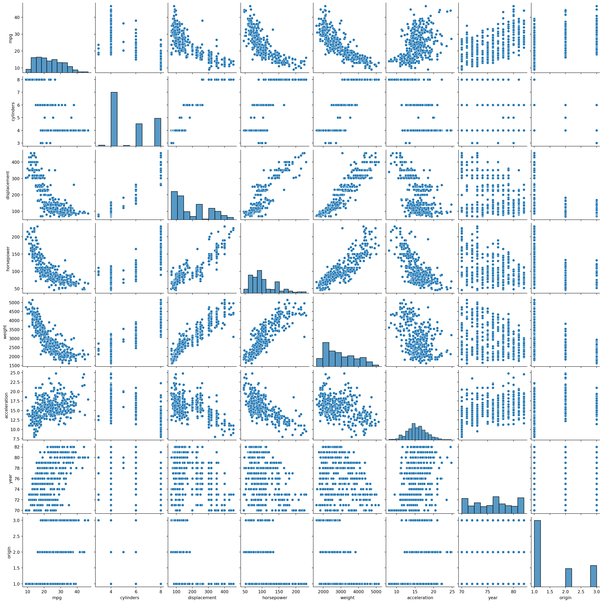

import pandas as pd
auto = pd.read_csv("Auto.csv", na_values="?")
auto = auto.dropna()10 Statistical learning, machine learning, and statistics
Note
Update: 9/11: Solution sketches to some exercises. Update: 26/10: Removed everything about R since there is a Python version of the book!
Update: 25/10: More about R.
10.1 Curriculum
The book can be found here; be sure to choose the one using Python!
- James et al., Chapter 1: Introduction
- James et al., Chapter 2: Statistical learning
10.2 Exercises
Exercises from James et. al. Chapter 2.
10.2.1 Applied
- 2.4.8 Link to the book website can be found above.
- 2.4.9 This is highly exam relevant. We’ll go through this exercise in the exercise session.
10.2.2 Conceptual
- 2.4.1.
- 2.4.5.
- 2.4.2.
- 2.4.3. Do it on pen and paper; use the internet if needed
- 2.4.4.
10.2.3 Some solutions
10.2.3.1 2.4.1
- The large sample size combined with few allows to you estimate a flexible model without overfitting. So you should at least try a flexible model. But inflexible models are easier to interpret, so you should try them to. In general, you should always at least compare the results of flexible and inflexible models.
- This happens e.g. in genetic studies, where you have thousands of genes to study and a small number of participants. Here you absolutely need to use an inflexible model, way more inflexible than the linear regression model. (Search the book for “LASSO” for more information.)
- When the true functional relationship is highly non-linear, inflexible models are unlikely to perform well. But you still have to take into account the number of observations and number of predictors. If the number of observations is large vs. the number of predictors, definitely go inflexible.
- If the variance of the error term is high relative to the scale of the data, then flexible models are likely to overfit, since they will misinterpret the noise in the data. A high error variance in itself does not mean anything though.
10.2.4 2.4.2
- Regression; inference; \(n=500\), \(p=3\).
- Classification; prediction; \(n=20\), \(p=13\).
- Regression; prediction; \(n=52\) weeks, \(p=3\).
10.2.5 2.4.9
First you important the data
Here the na_values="?" transforms instances of ? into NAs (not a number). We do this to force the horsepower covariate to be numeric, which it has to be. The dropna() method removes all rows containing at least one NA from the data frame.
10.2.5.1 (a)
auto.info()<class 'pandas.core.frame.DataFrame'>
Index: 392 entries, 0 to 396
Data columns (total 9 columns):
# Column Non-Null Count Dtype
--- ------ -------------- -----
0 mpg 392 non-null float64
1 cylinders 392 non-null int64
2 displacement 392 non-null float64
3 horsepower 392 non-null float64
4 weight 392 non-null int64
5 acceleration 392 non-null float64
6 year 392 non-null int64
7 origin 392 non-null int64
8 name 392 non-null object
dtypes: float64(4), int64(4), object(1)
memory usage: 30.6+ KBWe see that every variable is numeric except the name covariate, which is the name of the car model. Most of the variables are self-explanatory except origin.
10.2.6 (b)
auto.min()
auto.max()mpg 46.6
cylinders 8
displacement 455.0
horsepower 230.0
weight 5140
acceleration 24.8
year 82
origin 3
name vw rabbit custom
dtype: object10.2.7 (c)
auto.drop("name", axis=1).mean()
auto.drop("name", axis=1).std()mpg 7.805007
cylinders 1.705783
displacement 104.644004
horsepower 38.491160
weight 849.402560
acceleration 2.758864
year 3.683737
origin 0.805518
dtype: float6410.2.8 (d)
We need to reset the index of the data frame since we have removed the NAs.
auto_new = auto.reset_index()
del auto_new['index']
auto_new = auto_new.drop(list(range(10, 86)))Now you can call .mean(), and so on, on auto_new.
10.2.9 (e)
Use pairplot and a correlation matrix! The most important graph is the pairplot from Seaborn. Here you can see univariate scatterplots for every combination of values; moreover, you can see the histograms for each variable.
import seaborn as sns
import matplotlib.pylab as plt
sns.pairplot(auto)
plt.show()
Now we look at the correlation matrix. This displays the pairwise correlation for all combinations of variables. Recall that the correlation measures the degree of linear relationship between two variables, with \(1\) being perfect positive relationship and \(-1\) being perfect negative relationship. You’re interested in pairs with a high correlation magnitude.
auto.drop("name", axis=1).corr()| mpg | cylinders | displacement | horsepower | weight | acceleration | year | origin | |
|---|---|---|---|---|---|---|---|---|
| mpg | 1.000000 | -0.777618 | -0.805127 | -0.778427 | -0.832244 | 0.423329 | 0.580541 | 0.565209 |
| cylinders | -0.777618 | 1.000000 | 0.950823 | 0.842983 | 0.897527 | -0.504683 | -0.345647 | -0.568932 |
| displacement | -0.805127 | 0.950823 | 1.000000 | 0.897257 | 0.932994 | -0.543800 | -0.369855 | -0.614535 |
| horsepower | -0.778427 | 0.842983 | 0.897257 | 1.000000 | 0.864538 | -0.689196 | -0.416361 | -0.455171 |
| weight | -0.832244 | 0.897527 | 0.932994 | 0.864538 | 1.000000 | -0.416839 | -0.309120 | -0.585005 |
| acceleration | 0.423329 | -0.504683 | -0.543800 | -0.689196 | -0.416839 | 1.000000 | 0.290316 | 0.212746 |
| year | 0.580541 | -0.345647 | -0.369855 | -0.416361 | -0.309120 | 0.290316 | 1.000000 | 0.181528 |
| origin | 0.565209 | -0.568932 | -0.614535 | -0.455171 | -0.585005 | 0.212746 | 0.181528 | 1.000000 |
The whole correlation matrix isn’t shown. To fix this, use e.g.
import pandas as pd
pd.set_option('display.max_rows', 500)
pd.set_option('display.max_columns', 500)
pd.set_option('display.width', 1000)
auto.drop("name", axis=1).corr()| mpg | cylinders | displacement | horsepower | weight | acceleration | year | origin | |
|---|---|---|---|---|---|---|---|---|
| mpg | 1.000000 | -0.777618 | -0.805127 | -0.778427 | -0.832244 | 0.423329 | 0.580541 | 0.565209 |
| cylinders | -0.777618 | 1.000000 | 0.950823 | 0.842983 | 0.897527 | -0.504683 | -0.345647 | -0.568932 |
| displacement | -0.805127 | 0.950823 | 1.000000 | 0.897257 | 0.932994 | -0.543800 | -0.369855 | -0.614535 |
| horsepower | -0.778427 | 0.842983 | 0.897257 | 1.000000 | 0.864538 | -0.689196 | -0.416361 | -0.455171 |
| weight | -0.832244 | 0.897527 | 0.932994 | 0.864538 | 1.000000 | -0.416839 | -0.309120 | -0.585005 |
| acceleration | 0.423329 | -0.504683 | -0.543800 | -0.689196 | -0.416839 | 1.000000 | 0.290316 | 0.212746 |
| year | 0.580541 | -0.345647 | -0.369855 | -0.416361 | -0.309120 | 0.290316 | 1.000000 | 0.181528 |
| origin | 0.565209 | -0.568932 | -0.614535 | -0.455171 | -0.585005 | 0.212746 | 0.181528 | 1.000000 |
10.2.10 (e)
The variables weight, cylindeer, and displacement are very strongly related, and it probably suffices to choose one of them to predict mpg. All of them are highly correlated with mpg, but weight has the strongest relationship. The variables year and origin and acceleration are also strongly related to mpg, but not as strongly related to cylinder and displacement as weight is, and are not correlated with each other.